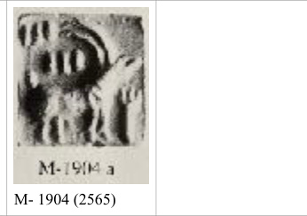
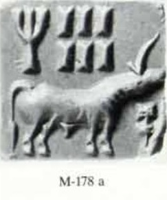
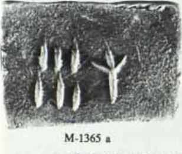
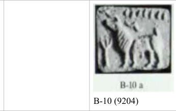
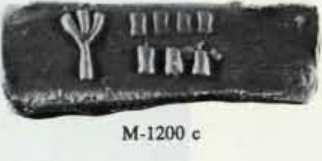

M-1904 · Mohenjo-daro

Six strokes above; trident beside goat. Existing running-text reading: “3 3.” The trident was already retained separately as field code S390. Bhaskar groups the strokes as six.
Local continuation · 23 November 2026 · photographs compared with unchanged catalogue readings

Six strokes above; trident beside goat. Existing running-text reading: “3 3.” The trident was already retained separately as field code S390. Bhaskar groups the strokes as six.

Six strokes and trident together above the animal. Existing proposed reading: “6 Woven-Cloths.” M-822 and H-71 provide two further reviewed upper-text counterparts.

The pair on a text face. This face has no animal scene to account for the trident’s position. Another panel of the object depicts an animal. Existing proposed reading: “6 Woven-Cloths.”
The measured correspondence is six strokes + trident. The interpretation six cloth items depends on Cúper’s proposed meaning for the trident, sign 390 (Mahadevan 162). A different countable label could fit the same arrangement.

PDF dorsal 110; workbook dorsal 112. Both codings remain visible in the candidate export.

The catalogues give seven plus trident. The photograph shows upper and lower marks; this review cannot confirm a seven-stroke total.
| Scene-layout object | Possible inline counterpart | Image review result | What the evidence shows |
|---|---|---|---|
| M-1904 | H-71 | supported spatial parallel | Two rows of three strokes and the trident appear together in the upper inscription above a unicorn; compare published M-1904 with six strokes above a goat and trident in the animal field. Harappa versus Mohenjo-daro; one shared two-sign pattern, not two independent semantic trials. |
| M-1904 | M-178 | supported spatial parallel | Trident and two rows of three strokes are in the upper text zone above a unicorn. A horn tip at the right is part of the animal; it is not supplied as an extra sign. |
| M-1904 | M-822 | supported spatial parallel | Trident and six strokes in two rows of three are together above the unicorn. This passes the check against a catalogue merely appending a frontal scene mark. |
| M-1904 | M-1365 | supported spatial parallel | Six strokes and the trident appear on a text face without an animal in that panel. A different panel M-1365_b.jpg has animal imagery; no animal species needs to be guessed for the text-face match. |
| M-1904 | M-987 | unresolved: broken photograph | Upper trident and strokes are visible, but a broken lower portion prevents independent confirmation of all six strokes. Catalogue completeness is not enough. |
| M-1904 | M-1799 | unresolved: no recovered photograph | The existing catalogue gives the same 016-390 sequence; no exact-object photo was recovered in the available local image collection. |
| K-26 | M-1782 | unresolved: no recovered photograph | Existing 384-740 maps to leaf-like 326 plus jar 342. K-26 has jar in the scene and leaf-like glyph above. Numerical correspondence alone does not establish the target layout. |
| K-26 | Mahadevan 2819 / lines 20,30 | unresolved: object/photograph alignment | Two sealing catalogue rows carry 326-342. They are not two physically verified independent seal examples; doubtful line 10 is excluded by the raw-source strict flag. |
| K-26 | Mahadevan 6121 / line 0 | unresolved: object/photograph alignment | The complete numerical line is 326-342, but a CISI photo identity has not been independently recovered. Numerical proximity to a different source reference does not justify attaching C-16 or any other photograph. |
| B-10 | M-1200 | unresolved: numeral coding in photograph | Panel c places a trident beside a stroke group on a text face. The group has upper and lower marks whose total cannot be independently confirmed as seven from this reproduction. Both catalogues encode 017/112, but that is overlapping transcription evidence. PDF B-10 dorsal 110 and workbook 112 remain separate alternatives; no seven-count spatial pair is confirmed. |
These are the stored proposals, not established translations. No original transcription is overwritten. The four supported inline counterparts span Mohenjo-daro and Harappa, but one Harappan occurrence is not an independent city-level prediction.
| Object | Unchanged existing transcription | Unchanged existing proposed English | Recorded findspot |
|---|---|---|---|
| M-1904 | 003-003 | 3 3 | Mohenjo-daro — Excavation area: DKG. (S); Block / house: 7IV; Room / grid: 49-; Recorded depth: -16.8 ft; Excavation number: DK8218565 |
| H-71 | 016-390 | 6 Woven-Cloths | Harappa — Excavation number: 12971 |
| M-178 | 016-390 | 6 Woven-Cloths | Mohenjo-daro — Excavation area: VSA; Block / house: 3XVIII; Room / grid: -30 Y/01; Recorded depth: -2.0 ft; Excavation number: VS 505243 |
| M-822 | 016-390 | 6 Woven-Cloths | Mohenjo-daro — Excavation area: DKC; Block / house: 4-; Room / grid: 31345/0615; Recorded depth: -1.5 ft; Excavation number: C2327249 |
| M-1365 | 016-390 | 6 Woven-Cloths | Mohenjo-daro — Excavation area: DKG. (S); Block / house: 1III; Room / grid: 4-; Recorded depth: -21.0 ft; Excavation number: DK9050658 |
| B-10 | 007 | 7 | Banawali — Excavation number: BNL 9204 |
| M-1200 | 176-704-255-740 | 017-390 | Of the Tax/Tribute Ship/Kalam-Measure Principal/First House | 7 Woven-Cloths | Mohenjo-daro — Excavation area: DK-; Excavation number: DK12146 |
| K-26 | 387 | [387]. | Kalibangan — Recorded depth: surface - |
| M-1782 | 384-740 | Of the King house. | Mohenjo-daro — Excavation number: -885 |
| Reference | Animal | Beside animal, source code | Above/behind, source codes | Primary search | Why excluded from primary |
|---|---|---|---|---|---|
| K-37 | Goat | 59 | False | no exact numeric dorsal list | |
| K-34 | Markhor | 59 | False | no exact numeric dorsal list | |
| B-14 | Urus? | 59? | False | frontal code uncertain, non-numeric, or multiple signs; no exact numeric dorsal list; source-code/identification disagreement | |
| M-410 | Gharial | 59 | False | no exact numeric dorsal list | |
| B-11 | Markhor | 171 | False | no exact numeric dorsal list | |
| M-272 | Turning goat | 99 | 284 | False | fewer than two dorsal signs; source-code/identification disagreement |
| M-1904 | Goat | 162 | 109 | False | fewer than two dorsal signs |
| B-10 | Markhor | 162 | 110 | False | fewer than two dorsal signs; source-code/identification disagreement |
| B-12 | Goat | 112? | 167 | False | frontal code uncertain, non-numeric, or multiple signs; fewer than two dorsal signs; source-code/identification disagreement |
| M-1905 | Goat | 211 | ? | False | no exact numeric dorsal list |
| Blk-5 | Urus | 211 | 171 | False | fewer than two dorsal signs |
| K-26 | Unicorn | 342 | 326 | False | fewer than two dorsal signs |
| M-223 | Unicorn | 162 | 342;336 | True | |
| B-4 | Urus | 162 | 342;53 | True | |
| B-3 | Unicorn | 211 | 59;105 | True | |
| C-17 | Unicorn | 1 | 342;8 | True | |
| M-1908 | Rhino with dot-in-circle | 86;98 | 342;347 | False | frontal code uncertain, non-numeric, or multiple signs; source-code/identification disagreement |
| K-39 | Rhino | 402 | 249;162 | False | source-code/identification disagreement; unmapped/disputed left-facing variant |
| Ns-56 | Unicorn | 162 | 32;102;302 | True | |
| M-1719 | Unicorn | 242 | 342;244;67 | True | |
| M-1918 | Buffalo | 242 | 162;1;lost | False | no exact numeric dorsal list |
| M-1180 | Human-faced markhor | 167 | 96;409;15 | False | source-code/identification disagreement |
| M-1718 | Unicorn | 397 | 120;342;391;100 | False | source-code/identification disagreement |
| M-1105 | Zebu | 393 | False | no exact numeric dorsal list | |
| M-288 | Tiger | 257 | 1;342;48;343;125;16 / 391 | False | no exact numeric dorsal list |
| H-95 | Hare | 410 | False | no exact numeric dorsal list; source-code/identification disagreement | |
| M-1367 | Two facing bisons | 267;201 | False | frontal code uncertain, non-numeric, or multiple signs; no exact numeric dorsal list | |
| M-1793 | Unicorn | 167? | 60;87;123;305 | False | frontal code uncertain, non-numeric, or multiple signs; source-code/identification disagreement |
| C-23 | Goat | 267;29? | 175;28;381;89;327;lost / 99;180 | False | frontal code uncertain, non-numeric, or multiple signs; no exact numeric dorsal list; source-code/identification disagreement; source explicitly disputes frontality |
| M-1792 | Unicorn | 342;347;59 | 342;82;342 | False | frontal code uncertain, non-numeric, or multiple signs; source-code/identification disagreement |
| K-67 | Urus | 326 | 326 | False | fewer than two dorsal signs |
| M-1429 | Gharial | 59 | False | no exact numeric dorsal list | |
| M-446 | Rhino | 63 | False | no exact numeric dorsal list |
Cúper already investigated copper picture/sign substitutions, animal/text associations and field glyphs. The old metadata already mark M-1904’s trident as S390 outside its stored running text. Bhaskar’s published 2024 classification already identifies the frontal/dorsal positions. This continuation adds the explicit exact-remainder search across both numerical catalogues and the counterpart photograph decisions. It does not claim to discover the trident, the six-and-trident formula or the general idea of movable signs.
All source versions and exclusions · Every raw candidate match · Complete image review · How scene glyphs enter current stored transcriptions · Computed counts · Local image provenance
Source images: Bhaskar 2024 ESM1, originally courtesy CISI; other CISI reproductions recovered unmodified from an existing local checkout. Direct Mahadevan search uses original strict/uncertainty flags rather than accepting cleaned doubtful signs. No GitHub fetch/push. Colab units: 0.